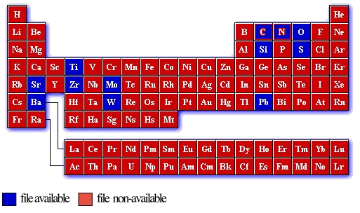

Pseudopotentials for the ABINIT code
Clicking on a blue-highlighted element in the periodic table will start a download procedure that will transfer a text file containing the pseudopotential.
Use at own risk !
Pseudopotentials should always be tested in well-known situations,
before using them for predictions ...
LDA (Teter "extended norm-conserving") pseudopotential files |
|
These pseudopotentials usually include more states as semi-core than the pseudopotentials in the Troullier-Martins, and are particularly suited for oxyde studies. |

Note : The size of the file may vary between 60 kB and 500 kB
Download the entire table here.
31 March 2001.